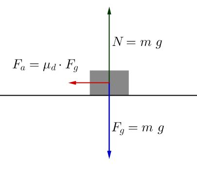

In fisica, una forza è tutto ciò che può cambiare lo stato di moto o di quiete di un corpo. Le forze si rappresentano con frecce (vettori), perché hanno:
Un esempio semplice: se spingi un carrello, stai applicando una forza.
Una forza è conservativa se il lavoro che compie dipende solo dalla posizione iniziale e finale del corpo, non dal percorso che fa.
Le più comuni sono:
Le formule importanti:
\(\oint \vec{F} \cdot d\vec{s} = 0\)
\(\vec{F} = -\nabla U\)
Energia potenziale:
Grafico di un oscillatore armonico (es. molla che vibra)
In assenza di forze dissipative, l'energia meccanica totale si conserva:
\( E = K + U = \text{costante} \)
Le forze dissipative fanno perdere energia meccanica trasformandola in altre forme (soprattutto calore).
Dipendono dal percorso, e agiscono contro il moto.
Esempi:
Formule importanti:
\( \vec{F}_a = -\mu N \hat{v} \)
\( \Delta E = L_{\text{dissipativo}} < 0 \)
Esempio dell'attrito di un corpo sul piano orizzontale
| Forze Conservative | Forze Dissipative |
|---|---|
| Lavoro indipendente dal percorso | Lavoro dipende dal percorso |
| Conservano l'energia meccanica | Fanno perdere energia (calore, rumore...) |
| Es: gravità, molla | Es: attrito, resistenza dell’aria |
Un carrello viene spinto con una forza costante di 20 N per 5 metri in linea retta. Calcola il lavoro compiuto dalla forza.
Soluzione:
\( L = F \cdot s = 20 \cdot 5 = 100 \, \text{J} \)
Una palla di 2 kg viene sollevata a 3 metri di altezza. Qual è la sua energia potenziale gravitazionale?
Soluzione:
\( U = mgh = 2 \cdot 9.8 \cdot 3 = 58.8 \, \text{J} \)
Un blocco scivola su un piano orizzontale per 4 metri sotto l'effetto di una forza di attrito di 5 N. Quanta energia si dissipa?
Soluzione:
\( \Delta E = -F_a \cdot s = -5 \cdot 4 = -20 \, \text{J} \)